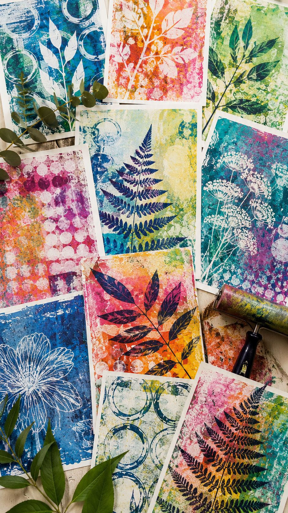

Workshops
Creative gatherings rooted in reflection, ecology, embodiment, and artistic practice.

Kate’s workshops invite participants into slower, reflective forms of creative engagement that center process, attention, ecology, and embodied experience.
Blending art-making, dialogue, ritual, and place-based reflection, these gatherings encourage participants to reconnect with intuition, memory, material, and community.
Workshops are designed for artists, educators, retreat spaces, schools, and groups seeking meaningful creative experiences grounded in care, curiosity, and transformation.

Upcoming Workshop
Gelli Plate Printmaking
Saturday, July 25 | 4:00–6:00 PM
Art of Banner Elk
5004 NC Hwy 105 S
Banner Elk, NC 28604
1-3 pm EST (in-person) | $75 per person
Join artist and educator Kate Wurtzel for a hands-on workshop exploring printing with natural materials, layering color and texture, image transfers, and creating one-of-a-kind prints.
No experience necessary. All materials are provided. Just bring your curiosity, a willingness to experiment, and a readiness to play.
Space is limited.